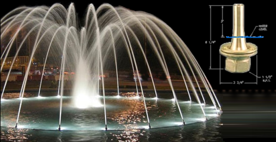
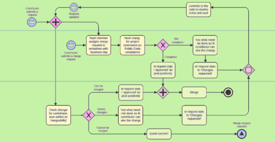

I'm a Microsoft Access expert who works on business applications that feature data-driven solutions and automated workflows. I've provided many companies with database apps to enable financial decision-making, streamline operations and enhance productivity.
I've been creating and improving data applications in central Texas for over two decades. My main talent is communication. I can unpack technical issues (see my posts on Stack Overflow, and I'm equally able to present my work in non-technical terms. Either way, the discussion is brief and clear. Another strength is change management. I know the value of bringing everyone on board. Many times, addressing a group of project stakeholders, I've successfully built a new consensus on design or implementation.
My work combines deep expertise, strong ethics and clear communication. A project begins with discovery, when I learn the business rules and constraints, your current needs, your future goals. It continues with accountability: Is the design doing what you want? Are you getting your money's worth? And, in my experience so far, it always ends with satisfaction.

An engineer-to-order manufacturing firm had no trouble finding customers, but needed ways to track sales and production. Starting from the print-based catalog, I used Access to create a pick-list approach for building quotes. I improved the means for product costing, and built production reports. I exported bills of material from an accounting software into SQL Server to enable Materials Resource Planning.
My work in SQL Server and Microsoft Access supported regulatory compliance and operational efficiency for a large managed care organization. To facilitate regular credentialing of 60,000 networked healthcare providers, I developed regular and ad-hoc data imports, reporting and many SQL procedures.

I re-engineered a case-review process that involved four departments within a large managed-care organization. After mapping the process, which relied a system of spreadsheets and ad-hoc emails, I implemented a solution using stored procedures in SQL Server, reporting via Microsoft SSRS, and a wizard-style automated process in Microsoft Access. This reduced turnaround time by 80%.
I administered a comprehensive survey of publicly-available information on property values, stored in SQL Server with Microsoft Access. I doubled runtime efficiency by cleaning up the VBA code in Access and optimizing the data processes between SQL Server and the front end. I also annotated the code to explain business rules and technical methods. These successes ultimately helped in replacing the Access application with a browser-based solution.
I work from a comprehensive toolkit in building robust database solutions from concept to deployment.
Are you ready to discuss your database project? I'd love to find out if I can help.